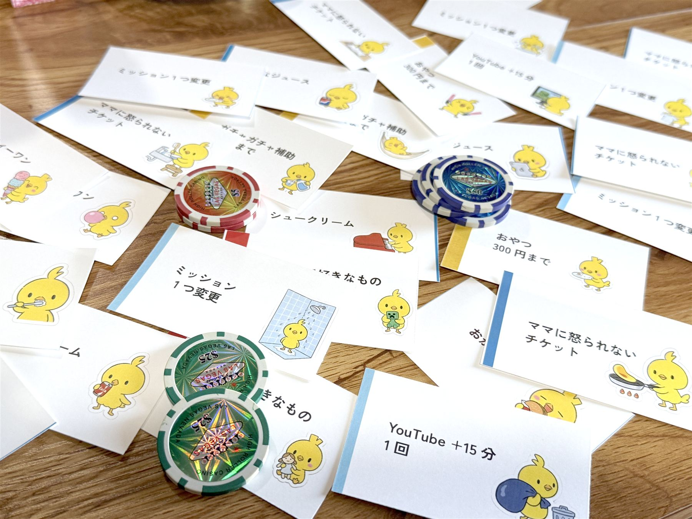

まずは宿題
やることを小さく置く。全部じゃなくて、今日のひとつから。
coin mission
子どものガチャ好きを逆手にとった、
家庭で育てる、小さなゲーム。
宿題も、お手伝いも、たまにガチャも。使うのはコインとカードだけ。 特別な道具はいらない、家の中で今日から始められるしくみです。

実際に使っているカードとコインabout
「宿題やって」「お手伝いして」が、毎日ちょっとした戦いになる。 それなら、いっそゲームにしてしまおう——。 コインミッションは、家の中でまわす、コインとガチャのしくみです。 うまくいった日も、ぐだぐだの日も、ぜんぶ含めて暮らしのログとして残しています。

最初の記事をnoteで読む
how it works
やることをこなすとコインがたまり、ガチャやごほうびに変わっていく。 家の中だけで完結する、シンプルな流れです。
暮らしそのものもポイントに。チキンコイン 4枚 ＝ ガチャ 1回。
days
やることを小さく置く。全部じゃなくて、今日のひとつから。

「やらされる」を、ちょっとだけ「選べる」に変える。

もらったものが見えると、小さい達成が少し残る。

続けるために、続かない日も仕組みに入れておく。
honest log
きれいごとだけじゃなく、うまくいかなかった月も、そのまま残しています。
4月87%、5月77%、6月69%。数字だけ見ると、きれいな右肩下がり。 でも中身を見返すと、「飽きた」というより、予定が多い日・イベント翌日に落ちやすいだけ。 完璧を目指さなくても回る——それが分かっただけでも、続ける価値がありました。

達成率が落ちた日は、予定が詰まった日やイベント後に集中。仕組みより、生活リズムとの相性が大きかった。
毎日ミッションを考えて、記録して、声をかける。子どもより先に、親の手間がボトルネックになる場面も。
手探りガチャや小さな自作品が報酬に。ごほうびが、家族で作る遊びに変わっていった。
毎日100点より、崩れたあと戻れる設計へ。休む日も、選べる日も、最初から仕組みに入れておく。
the family behind it
専門家でも、教育のプロでもありません。このゲームは、この3羽の毎日の中で、少しずつ育っています。

実験と寄り道がいきがい。思いつくと、まず家で試してみる。小学生のぴよこたちに振り回されたり、振り回したりしている。

納得できないルールには、ちゃんと「おかしい」と言う。その一言で、このゲームは何度もつくり直されてきた。ゲームと討伐が好き。

ガチャをまわす前が、いちばん真剣。かわいいものと集めることが好きで、今日のごほうびを誰より楽しみにしている。
このゲームを育てているうちに、
気づけば、こんな日常になっていました。
notes
始め方も、3か月やってみた本音も、noteに書いています。